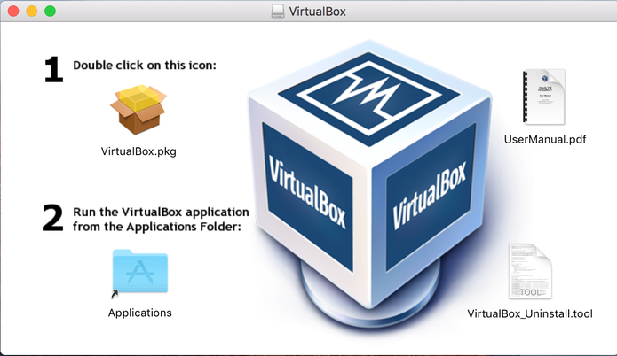

Sistema operacional código fechado
Código fechado ou Closed Source são sistemas usados pelos fabricantes onde o acesso aos codigos é restringido,
podendo ser acessado ou alterado apenas por pessoas autorizidas.
Modo texto (linha de comando)
O modo texto, seria basicamente, o sistema operacional sem a interface gráfica,
sendo utilizado somente em modo terminal para digitar comandos, estando presente tanto no Windows como no Linux também.
Navegação entre diretórios
Para a navegação entre diretórios é possivel utilizar o Prompt de Comando (CMD), é uma maneira mais prática
e rápida, podendo assim chamar comandos específicos de alguns programas instalados no seu computador, usando os comandos
dir, cd /e ../
Criação de diretórios e arquivos
A criação de diretório pelo Prompt também é possível usando o comando “mkdir”, e para criar um novo arquivo
use o comando “NUL”.
Simples e eficiente!
Sistema operacional código aberto
A exclusão de arquivos pelo Prompt pode ser executada com o comando "del /F /A", e o nome do arquivo logo em
seguida.
Renomeação de diretórios e arquivos
A Renomeação de diretórios e arquivos é feita pelo simples comando "RENAME" logo em seguida o nome do arquivo
que irá ser alterado, e o nome para qual você deseja mudar.
Movimentação de diretórios e arquivos
Caso haja necessidade de mover algum arquivo use o comando "Move", o nome do arquivo que deseja mover, e em
seguida coloque onde ele esta alocado e para onde vai.
Cópia de diretórios
e arquivos
Neste caso podemos usar um comando bem óbvio chamado "Copy", escolhemos o que vamos querer mover e depois para
onde iremos mandar.
Modo gráfico (Interface gráfica)
É um programa criado para tornar mais fácil a utilização do computador por meio de representações
visuais do sistema operacional.
O Windows possui apenas o ambiente gráfico padrão, com a chamada Windows Aero nas versões
Windows Vista e Windows 7.
Edição de arquivos
Se você já precisou preencher ou editar um arquivo PDF, provavelmente já pesquisou no Google sobre algum editor
de PDF que poderia lhe ajudar. Infelizmente, muitos programas de edição de PDF são ou muito caros ou difíceis de utilizar,
então aqui vai alguns editores para o Windows;
-PDFelement;
-Adobe Acrobat DC;
-Foxit PhantomPDF;
-Nuance Power PDF;
-HiPDF;
E também temos o próprio Word muito conhecido por quem trabalha com computador.
Modo gráfico (Interface gráfica)
O ambiente gráfico é um programa criado para tornar mais fácil a utilização do computador por meio de representações
visuais do sistema operacional. O Windows possui apenas o ambiente gráfico padrão, com a chamada Windows Aero nas versões
Windows Vista e Windows 7. Já para a GNU/Linux possui vários ambientes gráficos, como o KDE e o Gnome.
Área de trabalho
Na área de trabalho do Windows 10 estão os acessos diretos a alguns aplicativos assim como à barra de tarefas que está
localizado na parte inferior da tela. Talvez, para poder vê-la, é preciso passar o mouse ou a mão na parte inferior da tela caso
seja um dispositivo móvel. Se há um programa ou aplicativo que você usa frequentemente, é recomendado criar um atalho na área de
trabalho para poder acessá-lo mais fácil e rapidamente. Para fazer isso, clique no ícone do programa e o arraste para a área de
trabalho soltando-o no lugar que você quer vê-lo.
-Se depois de adicionar vários ícones na área de trabalho eles ficarem desorganizados, você pode organizá-los por nome, tamanho,
tipo de item ou data de modificação.
Trabalho com janelas
Um pouco diferente do Linux, o Windows conta com algumas opções de trabbalho com janelas, ele não simula várias áreas de
trabalho, mas é possível trabalhar com abas abertas, tanto com o google, como também com programas do próprio sistema, simplesmente
minimizando ou até mesmo diminuindo o tamanho das abas para ganhar produtivade.
Configuração do sistema
A parte de configuração do sistema é bem mais prática, basta pesquisar na sua barra de tarefas a opção "Configurações", e lá
você terá várias opções do que deseja configurar como:
-Sistema;
-Aplicativos;
-Dispositivos;
-Contas.
Ferramentas do sistema
Para acessar as ferramentas, clique em Menu Iniciar, Acessórios e depois em Ferramentas, assim aparecerá opções como essas abaixo:
Computador;
| Desfragmentador de disco;
-Editor de Caracteres Particulares; |
Informações do sistema; |
Internet Explorer sem Add-ons; |
Limpeza de disco;
Mapa de caracteres; |
Painel de Controle.
Acessórios
Como no Linux, no Windows também é possível achar os "Acessórios" que o sistema disponibiliza.
Para acessar você deve clicar no botão Iniciar do Windows, clicando a sequência:
-Botão Iniciar > Todos os Programas > Acessórios.
No Windows 10, após clicar no botão Iniciar, você localizará o título Acessórios do Windows na ordem alfabética. Aqui temos algumas
opções mais populares:
-Assistência Rápida;
-Bloco de Notas;
-Calculadora;
-Notas Autoadesivas;
-Ferramenta de Captura;
-Internet Explorer;
-Mapa de Caracteres;
-Paint;
-Windows Explorer;
-WordPad.
Menu de ajuda
No Windows temos várias formas de acessar a "ajuda" inserindo uma pergunta ou palavra-chave na caixa de pesquisa na barra de tarefas
para encontrar apps, arquivos, configurações e obtenha ajuda da Web.
Podemos também acessar "support.microsoft.com/windows" para encontrar respostas para problemas mais complexos, procurar conteúdo de suporte em
categorias diferentes e contatar o suporte ou selecione o link "Obter ajuda" quando estiver em Configurações para saber mais sobre a configuração
que está usando e encontrar respostas para suas dúvidas.
Gerenciamento de usuários e permissões
O gerenciamento de contas do Windows é um processo que não exige grandes conhecimentos, mas pode ser muito útil para evitar invasões de
privacidade ou mesmo confusão entre arquivos de usuários diferentes, algo muito comum em máquinas que possuem apenas um perfil de usuário cadastrado.
Com a conta de administrador você pode adicionar outras contas para seus filhos, pais ou outras pessoas que utilizam o mesmo computador que você.
Neste momento você pode criar os usuários e deixá-los sem senha, para que no ato da primeira utilização estas senhas sejam criadas, ou pode pedir
para que digitem as senhas já na criação. O importante é que cada um dos usuários possuam suas próprias senhas e que somente um usuário possua acesso
de administrador ao sistema.O importante é que cada um dos usuários possuam suas próprias senhas e que somente um usuário possua acesso de administrador
ao sistema.
Gerenciamento de arquivos
O gerenciador de arquivos do Windows é chamado“Explorer”. Ele tem por função principal visualizar os arquivos que existem no computador.
O gerenciador de arquivos pode ser acessado de várias formas. Quando você abre a pasta “Meus Documentos”, é aberto um gerenciador de arquivos, que está mostrando o conteúdo da pasta “Meus Documentos”. Quando você abre o ícone “Meu Computador”, está abrindo o gerenciador de arquivos que está
mostrando os dispositivos que existem no seu computador.
Sistema operacional código aberto
Níveis de inicialização e finalização
Inicialização:
Durante o processo de logon no Windows (controle de acesso e identificação do usuário que utilizará o computador, logo que o Windows termina de ser
carregado), o programa Virtual Vision ainda não estará ativo, porém um serviço chamado Virtual Vision Logon Agent estará. Este agente é uma espécie de
Mini-Virtual Vision cuja finalidade é apenas identificar os campos que devem ser preenchidos na janela de logon conforme você pressiona a tecla Tab, ecoar as
teclas pressionadas no teclado e permitir a navegação nos campos de edição utilizando as setas.
Finalização:
Quando você estiver desligando o Windows, o Virtual Vision poderá ser desligado antes que todos os outros programas tenham sido desativados. Isso acontece
devido à forma como o Windows procede durante o desligamento, e isso significa que o Virtual Vision poderia não estar mais ativo quando outro programa, sendo
desativado, exibisse uma mensagem perguntando se deve ou não salvar um documento antes de ser fechado.
Instalação na máquina virtual
A instalação na máquina virtual é basicamente o mesmo processo que o Linux, o que muda é o sistema que você irá escolher antes de iniciar o processo de
configuração.
Pacotes

A instalação de Pacotes no VirtualBox também é possível, caso você queira ou necessite do pacote Office na sua máquina virtual, não é dificil de se instalar,
vindo com ele completo.
Atualização
O Windows Update é um serviço de atualização da Microsoft para os sistemas operacionais Windows. Ele é o responsável por verificar junto ao
Microsoft Update as atualizações que o Windows precisa. Assim, se o recurso de Atualizações Automáticas estiver configurado como ativado, ele instalará
as atualizações automáticamente. Com o serviço também é possível transferir produtos em fase beta, simplismente ativar
esta opção.
Programas
O Windows já vem preparado com algumas programas de fábrica, pórem ele permite a instalação de outro programas de sua necessidade, abaixo iremos colocar alguns
programas que achamos essenciais para o uso:
-Google Chrome;
-Microsoft Office;
-Spotify;
-Avast Free Antivirus;
-Winrar;
-Adobe Photoshop.